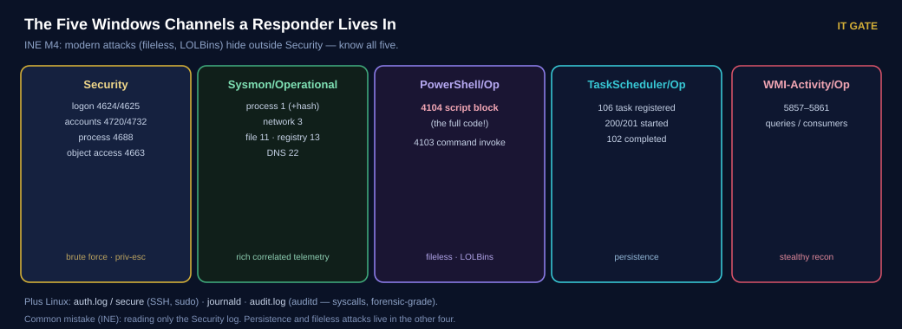
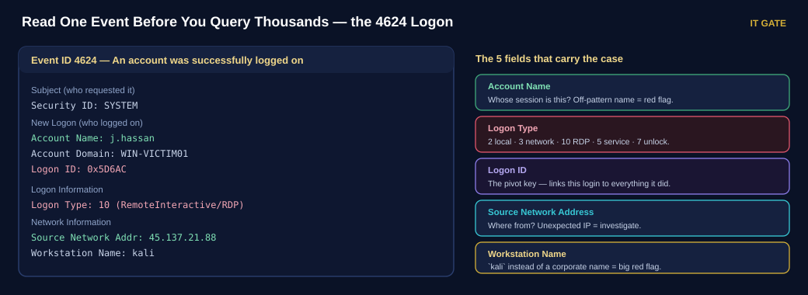
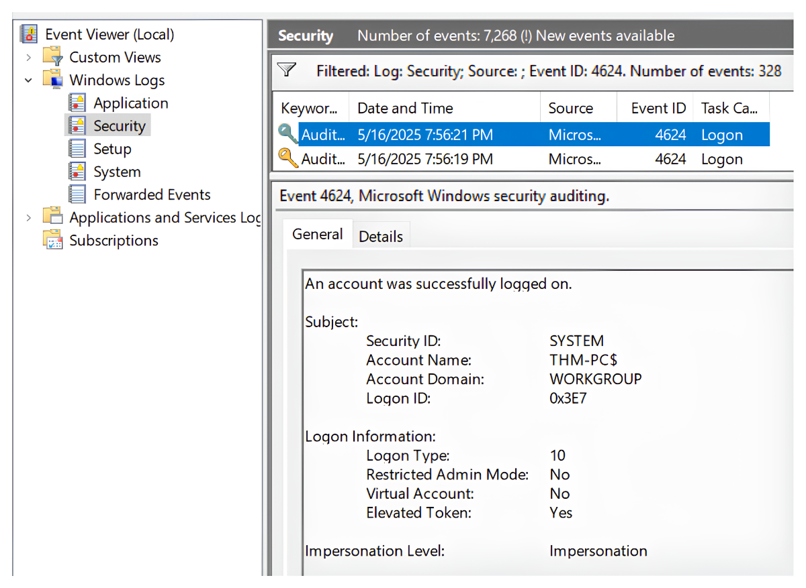
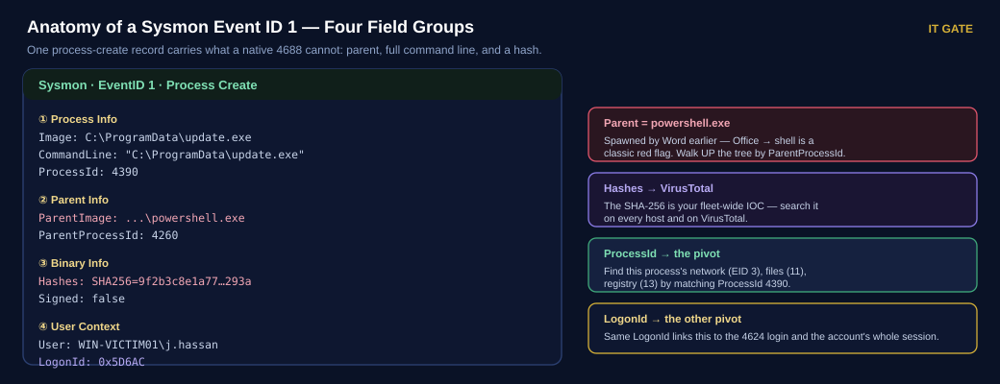
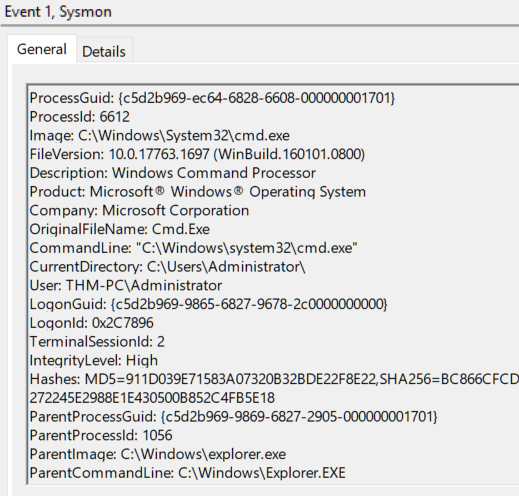
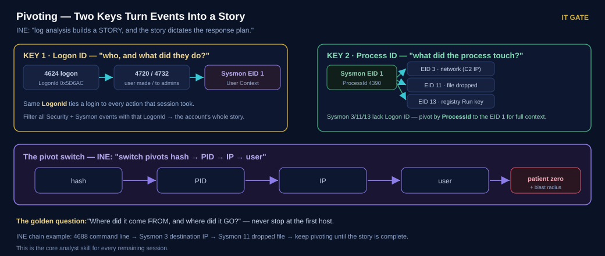
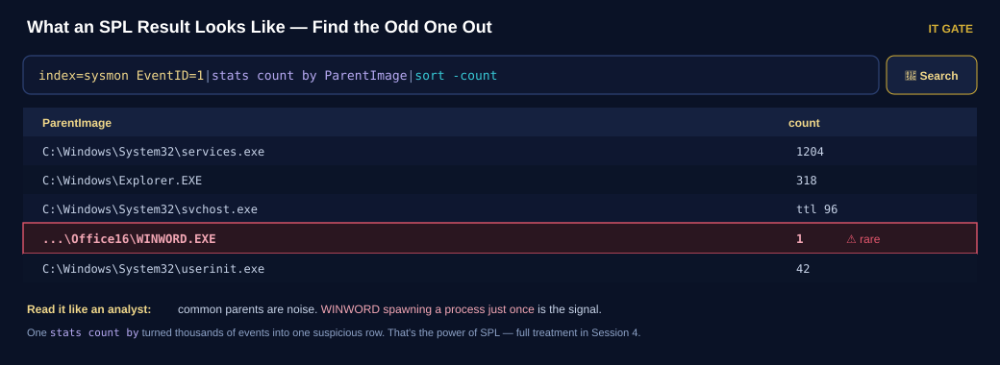
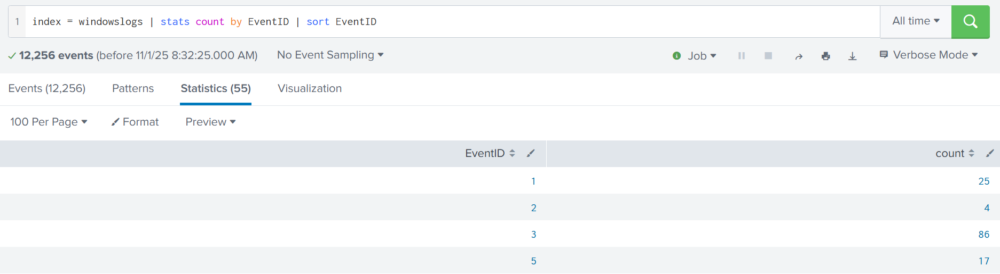

Read the Telemetry, Think Like an Analyst
Yesterday logs started flowing. Today you learn what's inside them, deploy Sysmon for deep visibility, and — most importantly — learn the method a SOC analyst uses to turn logs into a story.
Today's agenda
| Block | Topic | Time |
|---|---|---|
| 1 | Recap Session 2 | 10 min |
| 2 | Windows telemetry · the five channels · Event IDs · reading an event | 45 min |
| 3 | Sysmon & the lab — deploy Sysmon + auditd | 50 min |
| — | Break | 15 min |
| 4 | Linux telemetry · the analyst method — first response, pivoting, workbooks | 45 min |
| 5 | SPL demo · investigation challenges | 35 min |
| 6 | Knowledge check · homework | 15 min |
Your Session 2 lab must work — index=wineventlog and index=linux both
returning live events. If it isn't ready, fix it in the first block or pair up.
Today you see a short SPL demo so you can taste searching. The full SPL language and a real investigation are Session 4 — today is about the telemetry and the method.
What You Will Be Able To Do
Read the telemetry — and think like the analyst reading it.
- Name the five DFIR Windows channels and the ~12 Event IDs analysts use daily.
- Read a single event (a 4624 logon) field by field before querying thousands.
- Deploy Sysmon + auditd for deep endpoint telemetry.
- Apply the analyst method — first response, and pivoting by Logon ID / Process ID.
- Reconstruct an attack story from the evidence, and taste SPL before Session 4.
Module 3 · 3.3 (Windows logging) · 3.4 (Linux logging) — Module 4 · first response & log analysis
Never stop at the first event. INE's golden question: "Where did it come FROM, and where did it GO?" An analyst's value is in the pivot, not the single alert.
Quick Recap — Session 2
Answer before you reveal. If your lab isn't flowing, flag it now.
Q1 Which forwarder file decides what gets collected?
- outputs.conf
- inputs.conf
- props.conf
- server.conf
Q2 Which port do forwarders ship logs to?
- 8000
- 22
- 9997
- 514
Q3 Name the eight stages of the log pipeline in order.
Show answer
Generation → Collection → Shipping → Aggregation → Parsing → Storage → Analysis → Alerting. Today lives in Analysis — reading and connecting what we collected.
Q4 Session 2 collected logs. What is today's job with them?
Show answer
Understand what's in them (the Event IDs), add depth (Sysmon), and learn the method to turn them into an attack story — pivoting.
The Blind Spot
The most common analyst mistake, straight from INE.
An attacker ran certutil.exe — a trusted Windows tool — to download malware, then used
PowerShell to run it in memory. The analyst opened the Security log, saw a normal-looking
login, found nothing obviously bad, and closed the case.
They missed it. The download was in the Sysmon channel (full command line + hash). The in-memory commands were in the PowerShell channel (Event 4104). The Security log alone was blind to both.
"Analyzing only Security logs when PowerShell 4104 and Sysmon 1/3/11 are where modern (fileless, LOLBin) attacks actually appear." Know all five channels — and know how to pivot between them.
Windows Telemetry & the Five Channels
How Windows logs work, and the five channels a responder actually lives in.
eventlog service → .evtx files in
C:\Windows\System32\winevt\Logs → read via Event Viewer, PowerShell, wevtutil, or a SIEM.Every action (login, service start, process launch) creates an event with an Event ID, timestamp, provider, and event data. A provider writes events into a channel (the log stream). You choose which channels to forward.

When a SIEM alert names a Windows host, your first pivot is almost always the Security log around the alert time: who logged on (4624/4625), what ran (4688), what changed (4670) — then out to Sysmon and PowerShell for depth.
Module 3 · 3.3 — Windows event logging · Module 4 — log analysis, Windows channels & Sysmon
The Event IDs That Matter
You don't memorise thousands. You memorise about a dozen — the ones attacks touch.
| Event ID | Meaning | Why an attacker triggers it |
|---|---|---|
4624 | Successful logon | Access — check the Logon Type (2 local · 3 network · 10 RDP) |
4625 | Failed logon | Brute force / password spray |
4648 | Logon with explicit credentials | Pass-the-hash / runas |
4672 | Special privileges assigned | Admin / SYSTEM logon |
4688 | A new process was created | Execution (thin without Sysmon) |
4720 | User account created | Persistence — a backdoor account |
4724 / 4738 | Password reset / account changed | Account takeover |
4732 / 4756 | Member added to a (admin) group | Privilege escalation |
7045 / 4697 | Service installed | Persistence / lateral movement |
4104 | PowerShell script block | Fileless / LOLBin — the actual code |
1102 | Security log cleared | Anti-forensics — covering tracks |
46xx = the account/logon story (4624 in, 4625 failed, 4672 powerful, 4720 new user, 4732 made admin). 7045 = new service. 4104 = what PowerShell ran. 1102 = someone wiped the log — always suspicious.
Process creation 4688 with command line needs audit policy / GPO enabled. PowerShell 4104 needs script-block logging turned on. This is exactly why we add Sysmon.
Read One Event Before You Query Thousands
The 4624 logon — five fields carry the whole case.

Type 10 = RDP. Source 45.137.21.88 = external. Workstation kali
= not a corporate name. Three red flags in one event. And the Logon ID (0x5D6AC)
is the thread we'll pull to see everything this session did next.
Module 3 · 3.3 — "read the anatomy of one event before querying thousands"

Account & User-Management Events
"Is svc_sysrestore your account? Never saw it before." — the conversation that precedes many breaches.
| Event ID | Meaning | Malicious use |
|---|---|---|
4720 / 4722 / 4738 | Account created / enabled / changed | Backdoor account, or re-enable an old one |
4725 / 4726 | Account disabled / deleted | Disable SOC accounts to slow response |
4723 / 4724 | Password changed / reset | Take over an existing account |
4732 / 4733 | Added to / removed from a group | Add backdoor to Administrators |
Every account event has three parts
| Part | Answers | Note |
|---|---|---|
| Subject | Who did the action | Carries a Logon ID → correlate to the 4624 login |
| Object | Who was the target | "New Account" or "Member" — the account acted on |
| Details | What exactly changed | Target group (4732) or new-user attributes (4720) |
Real ransomware cases (thedfirreport) create a new admin for persistence, or reset all passwords to one value to slow recovery. When you see 4720/4732, take the Subject's Logon ID and find who was logged in when it happened.
Sysmon — The Depth Native Logs Lack
Free, from Microsoft Sysinternals. A kernel driver that hashes and correlates.
How it works (INE): a kernel driver hooks key system calls → a user-mode service formats
the data and computes a SHA-256 hash → events go to the Sysmon/Operational
channel, filtered by an XML config → any SIEM agent can forward them. Native 4688 hides the
command line and never records a hash or reliable parent — Sysmon fixes all three.
| Sysmon EID | Records | Analyst use |
|---|---|---|
1 | Process create — parent, command line, hash | Rebuild the process tree |
3 | Network connection (per process) | Find C2 / beaconing |
11 | File created | Dropped payloads |
13 | Registry value set | Run-key persistence |
22 | DNS query | Malicious domain lookups |
23 / 24 | File delete / clipboard | Data staging & exfil signs |
Out of the box it's noisy. It's driven by an XML config that filters what to keep — the community standard is SwiftOnSecurity (or Olaf Hartong / ION-Storm). Philosophy: exclude the noise rather than include everything. No config = drowning.


Module 4 — Sysmon essentials · Event IDs 1/3/11/13/22
Lab — Deploy Sysmon & auditd, Forward Both
Give your lab deep eyes. Verify every step before moving on.
Snapshot WIN-VICTIM01 as pre-sysmon and SOC-CORE01 as pre-s3. Your Session 2
forwarders must already be running.
- Create the new indexes on SOC-CORE01.
sudo /opt/splunk/bin/splunk add index sysmon sudo /opt/splunk/bin/splunk add index linux_audit - Install Sysmon on WIN-VICTIM01 with a filtering config.
Download Sysmon (Sysinternals) and
sysmonconfig.xml(SwiftOnSecurity). In an admin PowerShell:.\Sysmon64.exe -accepteula -i sysmonconfig.xml Get-Service Sysmon64 # should be Running - Forward the Sysmon channel.
Add to
...\SplunkUniversalForwarder\etc\system\local\inputs.conf:[WinEventLog://Microsoft-Windows-Sysmon/Operational] disabled = 0 index = sysmonRestart-Service SplunkForwarder - Turn on auditd on LNX-VICTIM01.
sudo apt-get install -y auditd sudo auditctl -a always,exit -F arch=b64 -S execve -k proc sudo auditctl -w /etc/passwd -p wa -k identity sudo /opt/splunkforwarder/bin/splunk add monitor /var/log/audit/audit.log -index linux_audit sudo /opt/splunkforwarder/bin/splunk restart
✅ Verification
index=sysmonreturns events; open Notepad → a Sysmon EID 1 appears with a full CommandLine and Hashesindex=sysmon EventID=3shows a network connection when you open a browserindex=linux_auditreturnsexecveevents after you run a command on LNX-VICTIM01
Do the TryHackMe Sysmon room now. You just produced Sysmon events; the room teaches you to read them (Metasploit, Mimikatz, persistence). Full guide: Setup Part 3.
Snapshot WIN-VICTIM01 as sysmon-ready.
Knowledge Check — First Half
Q1 Which Sysmon Event ID gives parent process, command line and hash?
- EID 3
- EID 13
- EID 1
- EID 22
Q2 Which event captures the actual PowerShell code that ran?
- 4688
- 4104
- 7045
- 1102
Q3 Name the five DFIR Windows channels.
Show answer
Security, Sysmon/Operational, PowerShell/Operational, TaskScheduler/Operational, WMI-Activity/Operational.
Q4 In a 4624 event, which field is the "thread" you pull to see the whole session, and why?
Show answer
The Logon ID — it's unique per session and appears on every action that session takes, so filtering by it reconstructs the account's full story.
Break
Stretch. When we return: Linux telemetry, then the method that ties it all together.
Break time
Press start when the break begins.
Use the break to fix it or pair up. You want index=sysmon returning events for the methodology block.
Linux Telemetry — Files, Journal, auditd
Plain-text files plus a binary journal, produced by logging daemons.
/var/log/ and the journal.| Source | Where | Answers |
|---|---|---|
| auth.log / secure | /var/log/auth.log (RHEL: secure) | ⭐ SSH, sudo, logins |
| syslog / messages | /var/log/syslog | General system + services |
| journald | journalctl | Structured systemd journal |
| auditd | /var/log/audit/audit.log | ⭐ syscalls, file access, forensic-grade |
The analyst's daily commands
tail -f /var/log/auth.log # watch live
journalctl --since "1 hour ago" # journal by time
grep "Failed password" /var/log/auth.log
# brute force in one line — failed SSH per source IP
grep "Failed password" /var/log/auth.log \
| awk '{print $(NF-3)}' | sort | uniq -c | sort -nr | headDistro matters: Ubuntu/Debian → auth.log + syslog; RHEL/CentOS →
secure + messages. And don't forget journald — on modern systemd
distros some events live only in the journal (INE common mistake).
Module 3 · 3.4 — Linux logging (daemons, files, journalctl, auditd)
First Response — The First 5 Minutes
Before deep analysis comes "hot triage" — turn "this looks bad" into "yes or no, and what now?"
| Minute | Action | Purpose |
|---|---|---|
| 0–1 | Open & orient — read the alert (rule, host/user, auto-containment), note SLA | Don't duplicate triage |
| 1–2 | Re-run & broaden — re-run the query ±5 min, check raw events for parsing/test noise | Confirm it's real |
| 2–3 | Scope snapshot — pivot once on IP/hash/user: who else? where else? | Find the blast radius |
| 3–4 | Containment decision — active beaconing/impact → isolate/block; else "pending" | Stop damage |
| 4–5 | Document & notify — short note (validation, scope, action) + evidence; ping lead | Audit trail, team synced |
Hot triage = 2–10 min, high-level scoping, stop the bleed. Deep analysis = hours to days, forensics, root cause. Today builds the triage reflex; deep DFIR is Sessions 9–10.
Module 4 — First Response: orient → validate → scope → contain → document
Pivoting — The Core Skill
One field value turns scattered events into one attack story.

Chain 4688 command line → Sysmon 3 destination IP → Sysmon 11
dropped file; and switch pivots hash → PID → IP → user until the story is complete.
"Log analysis builds a STORY, and the story dictates the response plan."
"Where did it come FROM, and where did it GO?" Never stop at the first host — pivoting is how you find patient zero and the full blast radius.
Module 4 — log analysis (pivot skills) & deep analysis (find patient zero)
Workbooks — Red-Flag Hunts
Repeatable procedures: filter → look at these fields → these are the red flags → pivot → verdict.
WB1 Detect RDP brute force
Show the workbook
Filter Security for 4625 → Logon Type 3 or 10. Red flags: many usernames tried (spraying), many failures on Administrator (brute force), workstation name off-pattern (kali), unexpected source IP. Then take the following 4624 and its Logon ID.
WB2 Hunt for backdoored users
Show the workbook
Filter for 4720 / 4732. Red flags: no IT confirmation, out-of-hours/weekend, unknown Subject, target name off naming-pattern (backup vs thm_svc_backup). Confirm → copy the Subject Logon ID → find the matching login.
WB3 Analyse a process launch (Sysmon EID 1)
Show the workbook
Red flags: image in Temp/Public, random name (jqyvpqldou.exe), hash flagged on VirusTotal, unexpected parent (Word → PowerShell). Walk up the tree (ProcessId = ParentProcessId) until confident, then trace the chain by Logon ID.
WB4 Analyse process activity (network / file / registry)
Show the workbook
Take the ProcessId from EID 1 → find its Sysmon 3 (external IP on 80/4444, VT-flagged, DNS to .top/.click), 11 (files in Temp/Public, .bat/.ps1/.exe), 13 (Run-key persistence).
A workbook makes the analyst method repeatable and teachable. Every real hunt is one of these patterns — the same loop, harder data. You'll run them for real in the challenges and in Session 4.
A Taste of SPL
Just enough to search your new telemetry. The full language is Session 4.

Watch the instructor run these against the lab. Don't master them today — just see the shape.
# what spawns what on the endpoint?
index=sysmon EventID=1 | stats count by ParentImage | sort -count
# any Office app spawning a shell? (a red flag from WB3)
index=sysmon EventID=1 ParentImage="*WINWORD*" | table _time, Image, CommandLine
# outbound connections by process (pivot to C2)
index=sysmon EventID=3 | stats count by Image, dest_ip, dest_port | sort -count
stats count by turns thousands of events into one suspicious row — WINWORD spawning a process once.
stats count by EventID in the Statistics tab (source: TryHackMe · Splunk: Exploring SPL).Next session: operators, filtering, stats/timechart, subsearch/join to correlate
Sysmon with 4624 by Logon ID, and anomaly detection. Today you just need to see that SPL is the
pivoting method, typed into a search bar.
Module 3 · 3.6/3.10 — SIEM & SPL (full treatment in Session 4)
Build the Story — Investigation Challenges
Put the method to work: ingest a dataset, pivot, and reconstruct the attack.

Three datasets (Add Data → Upload → source type _json)
| Challenge | Index | Method it drills |
|---|---|---|
| Warm-up · Linux auth & auditd | linux_audit | Brute force → success → recon (WB1) |
| Scenario 1 · Windows process execution | sysmon | Process tree + C2 pivot (WB3/WB4) |
| Scenario 2 · Windows persistence | wineventlog | Backdoor user + service + log wipe (WB2) |
🔎 Open the S3 challenges (datasets + questions)
Do the Linux warm-up together, then race Scenario 1 in pairs. Scenario 2 is homework. Instructors: SPL solutions are hidden under each scenario.
Knowledge Check — Second Half
Q1 Which field links a login (4624) to the account changes it made (4720/4732)?
- Event ID
- Logon ID
- Source Port
- Task Category
Q2 A Sysmon network event (EID 3) has no Logon ID. How do you get its full context?
- Give up — the data is incomplete
- Search by timestamp only
- Read the Security log instead
- Pivot by ProcessId to the matching EID 1
Q3 Give the 5-minute first-response steps in order.
Show answer
Orient → validate (re-run/broaden) → scope (pivot once) → contain (decision) → document & notify.
Q4 You confirmed one compromised host. INE says don't stop there — what's the golden question?
Show answer
"Where did it come FROM, and where did it GO?" Pivot to find patient zero and every other affected host.
Summary & Cheat Sheet
What we learned, in order
- The five DFIR channels and the ~12 Event IDs attacks touch.
- How to read one event (4624) before querying thousands.
- Deployed Sysmon + auditd for deep telemetry.
- Linux telemetry — auth.log, journald, auditd.
- The analyst method — first response + pivoting (Logon ID / Process ID) + workbooks.
- A taste of SPL, then rebuilt an attack story in the challenges.
📋 Session 3 Cheat Sheet
Five DFIR channels
- Security — 4624/4625, 4720/4732
- Sysmon — 1/3/11/13/22
- PowerShell — 4104 (the code)
- TaskScheduler — 106/200
- WMI-Activity — 5857–5861
Windows Event IDs
4624/4625logon ok / failed4648explicit creds (PtH)4720/4732user / to admins7045service ·4104PS ·1102log cleared
Logon types (4624)
2local ·3network10RDP ·5service ·7unlock
Sysmon Event IDs
1process (parent, cmdline, hash)3network ·11file ·13registry22DNS ·23/24delete/clipboard
Pivoting (the method)
- Logon ID → login ↔ account actions
- ProcessId → process ↔ net/file/reg
- Switch: hash → PID → IP → user
- "Where FROM, where GO?"
First response (5 min)
- Orient → validate → scope
- → contain → document
- Pivot once on IP/hash/user
Linux telemetry
/var/log/auth.log— SSH, sudojournalctl --since/var/log/audit/audit.log— auditd- RHEL:
secure,messages
Deploy Sysmon
Sysmon64.exe -accepteula -i config.xml- Config: SwiftOnSecurity (exclude noise)
- inputs.conf → Sysmon/Operational →
index=sysmon
You know the telemetry and the method. Session 4 makes it fast: full SPL — search, filter, correlate (subsearch/join), and hunt anomalies — a real investigation in the SIEM.
Key Takeaways
- Five DFIR channels — reading only Security is the classic blind spot.
- Read one event before querying thousands; the Logon ID is the thread to pull.
- Sysmon EID 1 = parent + command line + hash; native 4688 is shallow.
- Linux:
auth.logfor the logon story,auditdfor the exact commands. - First response = orient → validate → scope → contain → document, in 5 minutes.
- Pivoting (Logon ID / Process ID / hash→PID→IP→user) turns events into a story.
- Never stop at the first host: "Where did it come FROM, and where did it GO?"
Homework
All free rooms — no subscription needed. Lock in the telemetry and method before Session 4's SPL.
Finish the lab — Sysmon & auditd flowing
RequiredDue · 11 Augindex=sysmon must return EID 1 with command lines, and index=linux_audit
must return execve events. This telemetry powers every remaining session.
TryHackMe — Investigating Windows (free)
RequiredDue · 11 AugHands-on hunting in a compromised Windows box using event logs — pivoting for real. Free room.
TryHackMe — Linux Logging for SOC (free)
RequiredDue · 11 Augauth.log, package logs, bash history and auditd — the Linux half, hands-on. Free room.
execve.Prep for Session 4 — Splunk: Exploring SPL (free)
OptionalDue · 18 AugGet a head start on next session's full SPL. Free room; its prerequisites are our S1/S2 homework.
Also finish Scenario 2 (Windows persistence) on the challenges page. Progress is saved in this browser. "Add all deadlines" downloads an .ics for your calendar.
References
Primary source — INE eCIR v2
| Topic | INE module & lesson |
|---|---|
| Windows event logging & log types | Module 3 · 3.3 |
| Linux logging (daemons, files, auditd) | Module 3 · 3.4 |
| Log analysis, five channels & Sysmon | Module 4 · log analysis |
| First response & pivoting (find patient zero) | Module 4 · first response & deep analysis |
Supporting labs — TryHackMe
- Windows Logging for SOC (in-class · premium)
- Sysmon (in-class · premium)
- Investigating Windows (homework · free)
- Linux Logging for SOC (homework · free)
- Splunk: Exploring SPL (S4 prep · free)
Lab guide
INE is the primary reference for the exam. THM reinforces — where wording differs, INE wins. Sysmon config credit: SwiftOnSecurity / Olaf Hartong (community configs).
Create a homework task
Add your own lab, reading or exercise to this session's homework list.
Navigate with ← → arrow keys